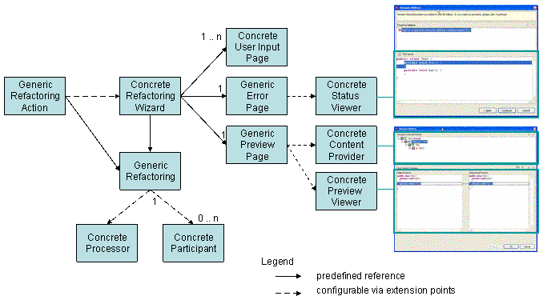

| Request for Comments |
Support Java references outside Java code. References to Java elements in particular classes can show up in specific kinds of non-Java source files, such as plug-in manifest files (plugin.xml), extension point schema files, and Java launch configurations in the workspace. These references should also participate in Java operations like search, move, rename, and other refactoring operations. JDT will surface APIs that enable other plug-ins to contribute to and participate in these operations. [JDT Core, JDT UI, JDT Debug, PDE] [Theme: Extended Java family]
This document doesn't cover search or other functions also mentioned in the above plan item.
Last modified: July 28, 2003
The current refactoring implementation has the following three shortcomings:
This document focusses on items 1 and 3.
Although refactoring is located in the JDT/UI plug-in it is already separated into a UI and a core layer:
Refactoring
and IChange. A concrete refactoring (e.g a subclass of
class Refactoring) is responsible for precondition checking and change
creation (e.g returning an instance of class IChange). The precondition
checking is split into two phases:To enable other plug-ins to participate in certain refactorings their implementations are split into a processor/participant architecture. An extensible refactoring has one processor and 0 .. n participants. The major characteristics of processors and participants are:
Participants can only participate in changes triggered by a processor. There is no support to participate in changes caused by another participant. The processor/participant architecture will not support arbitrary refactoring composition. Refactoring composition requires that a precondition check describes its result in some kind of postcondition which is then used as input for precondition checking of the next sibling refactoring in the composite. Consider the following example: a composite refactoring consists of the two refactorings (a) create class A.java and (b) add a method to A.java. One precondition check of refactoring (b) is: does A.java exist? Therefore evaluating the preconditions of both refactorings in isolation will fail. In contrast precondition checking in the processor/participant architecture assumes that the changes performed by the processor and the participants are "unrelated" to each other and therefore the preconditions can be checked in isolation.
Both processors and participants are contributed via extension points. XML expressions (comparable to those used for contributing to a pop-up menu) are used to describe their availability.
For each refactoring that is split into a processor/participant there is a "generic" action. This action creates a generic refactoring responsible to find the right processor and participants depending on the element(s) selected. Having such a generic action ensures that the same refactoring is triggered independent from where the refactoring is activated. The UI for the refactoring is determined by the processor chosen to process the element. Since processors and participants create errors and change objects typically not known by the refactoring framework the error and preview page must be extensible as well. The concrete status error viewer is picked depending on the type of status returned from precondition checking. The type of the change objects determines the concrete preview viewer. Additionally special content providers are needed for different change types to ensure proper rendering the of tree presenting all changes.
The picture below presents an overview of the new processor/participant split. Classes labeled as "generic" are provided by the refactoring framework. Classes labeled as "concrete" are concrete implementations provided by clients. A dashed line expresses a references between classes configurable via extension points. Solid lines indicate a fixed reference not configurable by client plug-ins.

The details of the processor/participant architecture are illustrated by examples. Please note that JDT/UI is the home of the current implementation. Hence all extension points are prefixed with org.eclipse.jdt.ui. This will change when the code is moved into a separate plug-in.
Renaming method A#foo() into A#bar() takes place according to the following steps:
The generic rename refactoring searches in Eclipse's registry for a processor that is able to "rename" a Java method. An example of a processor capable to rename a Java method is:
<renameProcessor
id="org.eclipse.jdt.renameProcessor.Method"
class="org.eclipse.jdt.internal.corext.refactoring.rename.RenameMethodProcessor">
<objectState>
<property name="instanceof" value="org.eclipse.jdt.core.IMethod"/>
</objectState>
</renameProcessor>
Due to its extensibility the new generic rename refactoring can only assume that it is renaming an element of type object. Hence a Java method rename processor must constrain its availability to IMethods. The <objectState> element can be used to describe a processor's availability depending on the state of the element to be renamed. Section Property Evaluation in Plugin.xml Files provides an overview of the property evaluation mechanism used by the refactoring plug-in.
The rename action is disabled if no processor can be found.
Find all interested participants of a Java method rename. A typical rename Java method participant looks as follows:
<renameParticipant
class="org.example.jsp.refactoring.RenameMethodParticipant"
id="org.example.jsp.refactoring.renameMethodParticipant">
<projectScope>
<property name="nature" value="org.example.jsp.core.jspnature"/>
</projectScope>
<objectState>
<property name="instanceof" value="org.eclipse.jdt.core.IMethod"/>
<property name="isPrivate" value="false"/>
</objectState>
</renameParticipant>
Since participants are typically defined in higher level pug-ins care must be taken to avoid unnecessary plug-in loading. This is achieved by a two step approach:
Both projectScope and objectState are mandatory.
Compute the activation status of the rename refactoring by considering activation status of the processor and all participants. If the returned status doesn't contain any fatal error, determine the UI depending on the state of the processor. Processors are UI independent hence they can't have any references to the UI. So the processor UI relationship must be defined somewhere else. This is done by describing the relationship in XML as well.
<refactoringWizard
id="org.eclipse.jdt.renameProcessor.ui.IMethod"
class="org.eclipse.jdt.internal.ui.refactoring.reorg.RenameMethodWizard">
<objectState>
<property name="instanceof" value="org.eclipse.jdt.internal.corext.refactoring.rename.RenameMethodProcessor"/>
</objectState>
</refactoringWizard>The concept of derived elements is discussed using the rename Java field refactoring. Fields are commonly used as properties with corresponding setter and getter methods. A special rename field refactoring is aware of this relationship and renames the setter and getter method when the field gets renamed. Participants are contributed based on the element to be changed. Since the main element is a field no rename method participants are loaded. Therefore a processor can provide a set of additional elements that it manipulates. These elements are called derived elements. In contrast to participants that work on the main element (in our example the Java field), derived participants may depend on user input. E.g. in JDT renaming the corresponding setter and getter of a field can be controlled by the user. So derived participants can only be loaded after the user has pressed the finish or preview button. Since they missed the check activation phase of the precondition checking the result of the activation check of derived participants is merged into the result of the processor's input checking.
The concept of resource modifications is discussed using the rename Java package refactoring. Although packages are mapped to folders on the file system, renaming a package is a different operation than renaming its underlying folder. Renaming a package maps to the following resource operations:
Now consider the following example: package p1 contains Java and HTML files. Additionally, there is a HTML plug-in that wants to participate in moving HTML files to update href elements in other HTML files. Since a HTML plug-in doesn't know anything about Java it can't participate in renaming a package. Even if it had a reference to the Java plug-in, participating in a package rename to determine this situation would require that the HTML plug-in doubles the logic for mapping a package rename to the underlying file system. To solve this problem a refactoring processor must express higher level operations in terms of resource modifications when possible. These resource modifications are then taken to determine the appropriate set of participants. This means for the HTML plug-in that it is enough to register a file move participant. Like participants for derived elements participants for resource modifications are computed after user input. Hence their activation checking is merged into the processors input checking as well.
Source folders (package fragment roots) are a special kind of folders. Besides their underlying folder on disk additional information about the build path and the output folder is associated with a source folder. Will there be a special rename source folder processor or a folder rename participant? The Java model offers a method to rename a source folder which updates the necessary build path information. Therefore implementing s source folder rename with a participant duplicates that code in a participant. Furthermore the provided delta looks different. A participant implementation triggers the following deltas:
A special source folder processor triggers the following deltas:
Clearly the second delta is more appropriate. It is exactly what clients listening to deltas expect. Therefore the source folder rename is implemented using a special processor. For the given example the two processors are defined as follows:
#### The processor to rename resource (files, folders, projects, ....)
<renameProcessor
id="org.eclipse.jdt.renameProcessor.IResource"
class="org.eclipse.jdt.internal.corext.refactoring.rename.RenameResourceProcessor">
<objectState>
<property name="instanceof" value="org.eclipse.core.resources.IResource"/>
</objectState>
</renameProcessor>
#### The processor to rename source folders
<renameProcessor
id="org.eclipse.jdt.renameProcessor.IPackageFragmentRoot"
>> override="org.eclipse.jdt.renameProcessor.IResource"
class="org.eclipse.jdt.internal.corext.refactoring.rename.RenameSourceFolderProcessor">
<objectState>
<or>
<property name="instanceof" value="org.eclipse.jdt.core.IPackageFragmentRoot"/>
<and>
<property name="instanceof" value="org.eclipse.core.resources.IFolder"/>
<property name="isSourceFolder" value="true"/>
</and>
</or>
</objectState>
</renameProcessor>With the override attribute (marked with ">>"" in the above example) the rename package fragment root processor specifies that it replaces the rename resource processor if its object state matches. This is the case if the element to be renamed is of instance IPackageFragmenRoot (which is the case if a source folder is selected in the package explorer) or if the element is of instance IFolder and it can be converted into a source folder (which is the case if a source folder is selected in the resource navigator).
What happens if the processor isn't unique for an element? In this case the user has to decide which processor he wants to use to perform the refactoring. Analogous to the Open With menu item the user is able to define a preferred processor to avoid unnecessary user arbitration.
To avoid unnecessary plug-in activation processor and participant contributions need means to describe there availability. The current implementation uses an extensible property evaluation mechanism to do so. I implemented a new mechanism instead of using the existing IActionFilter mechanism due to the following reasons:
IContributorResourceAdapter. In an open
refactoring architecture the class to which the element is to be
adapted must be configurable. The new property implementation supports
such a mechanism in the form of <objectState
adaptable="classname">. The key passed to
IAdaptable.getAdapter must be an object of type Class, not
a string. Therefore the class name must be converted into a Class
object, which can lead to plug-in class loading. The class loader of
the plug-in containing the <objecState adaptable="...">
element is used to convert the class name into a Class.
Therefore only required plug-ins might be loaded by this mechanism (no
upcalls). Additionally, availability checks take place on user actions,
hence no unnecessary plug-in loading takes place on start-up.Defining a new property tester is done in XML in the following way:
<extension point="org.eclipse.jdt.ui.propertyTesters">
<propertyTester
id="IResourcePropertyTester
type="org.eclipse.core.resources.IResource"
properties="name, projectNature"
class="org.eclipse.jdt.internal.corext.refactoring.participants.xml.ResourcePropertyTester"/>
</extension>The attributes do have the following meaning:
To ensure optimal performance for instance of checks (they are the most used property tests), the "instanceof" property is pre-defined and not contributed.
A first implementation of the proposed processor/participant architecture exists in the JDT/UI plugin. The relevant packages are:
The plugin org.eclipse.jdt.ui.examples.javafamily contains a rename type participant to update type references in JSPs.
As always you understand ideas better after you have written them down. Therefore the proposal contains some concepts not yet implemented or implemented in a different way.
The refactoring undo implementation has several shortcomings. The shortcomings mainly originate from the fact that refactoring was written for Java files only. The undo manager makes the following assumptions:
The platform is working on a new context concept to limit the number of available actions. We should check if the <projectState> element for participants can leverage the new context concept.